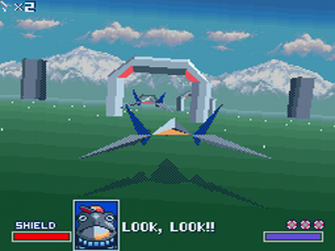
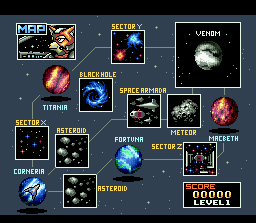
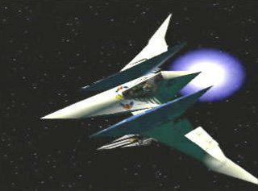

Star Wing
C'est en juin 1993 que la franchise est née en France, son premier épisode, Star Wing (ou Star Fox en Amérique ainsi qu'au Japon), est considéré comme un pilier du jeu vidéo. A l'époque de l'ère 16 bits, il semble chimérique d'imaginer un jeu 3D sur la console : pourtant Star Wing de Nintendo contredit cette invraisemblabilité et cela grâce à la puce FX conçue en 1993, rendant maintenant possible d'afficher un jeu en 3D en temps réel. L'histoire nous entraîne à suivre l'équipe Star Wing, animaux humanisés se battant contre le maléfique Andross, se déplaçant de planètes en planètes afin d'atteindre Venom et d'en découdre avec cet ennemi.
Lien des articles :
- Nintendo Master
- Manga News
- Youtube


